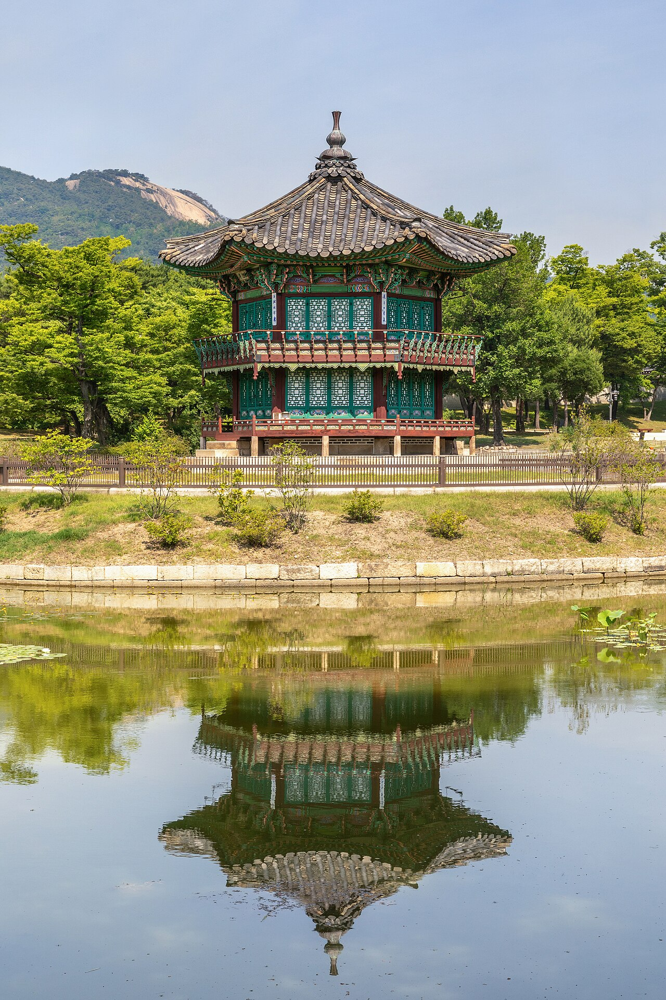

Objetivo do módulo
Desenvolver um projeto de criação de imagem fotográfica, selecionando as fotografias produzidas para a apresentação do produto final e a organização do portfólio.
Parte 1
O projeto final
Aqui você coloca em prática tudo o que aprendeu: técnica, olhar, luz, edição e visão de negócio. A proposta é criar, em grupo, um ensaio fotográfico com um tema de livre escolha, passando por quatro etapas — uma verdadeira jornada do fotógrafo.
Cada etapa, por mais simples que pareça, é também uma forma de avaliação contínua do seu aprendizado. Pergunte ao instrutor as datas de início e fim de cada uma e fique atento aos prazos.
Etapa 1 · Ampliando a minha visão
Pesquisa, brainstorm e mood board
Escolha e pesquise o tema
Em grupo, escolham um tema livre que tenha significado para vocês: um bairro, uma cultura, retratos, natureza, comida, rotina, uma causa. Pesquisem referências sobre ele.
Brainstorm (tempestade de ideias)
Joguem todas as ideias no papel, sem censura: como retratar esse tema? Que cenas, lugares, pessoas, objetos, cores e luz combinam com ele?
Crie um mood board
Reúnam imagens de referência num painel visual (o mood board) que defina o “clima” do ensaio: paleta de cores, tipo de luz, enquadramentos e estética desejada.
É um “painel de inspiração” — uma colagem de imagens, cores e palavras que traduz a sensação que você quer no projeto. Ele alinha o grupo e serve de bússola na hora de fotografar.




Entrega da etapa: apresentação da pesquisa do tema, do brainstorm e do mood board.
Etapa 2 · Concepção e criação
Planejamento e produção
Monte o cronograma
Definam prazos para cada parte: datas das produções, da edição e da entrega. Trabalhar com cronograma é o que separa o amador do profissional.
Defina funções na equipe
Quem fotografa, quem dirige a produção, quem cuida da edição, quem organiza a apresentação. Trabalho em equipe com papéis claros rende muito mais.
Fotografe a produção
Mãos à obra! Apliquem composição, luz e exposição. Produzam muito material — é melhor sobrar do que faltar na hora de escolher.
Choveu? A pessoa não apareceu? A luz mudou? Faz parte. Saber improvisar e otimizar o tempo é uma capacidade profissional valiosa — e avaliada.
Etapa 3 · Seleção e finalização
Seleção, tratamento e edição
Selecione as melhores
De acordo com a concepção do projeto, escolham as fotos mais fortes — as que melhor contam a história do tema. Curadoria é parte da arte.
Trate e edite as imagens
Apliquem o que aprenderam no Módulo 3: ajustes, corte, cor e clima coerentes em todo o ensaio (identidade visual).
Grave e organize
Salvem as imagens finais em suportes digitais, com backup, e organizadas para a apresentação.
Prepare a apresentação
Montem o material que vai contar o projeto: conceito, processo e resultado.
Um bom ensaio parece “da mesma família”: mesma pegada de cor, mesma intenção. Edite o conjunto pensando no todo, não em fotos isoladas.
Etapa 4 · Apresentar o projeto
Apresentação e portfólio
Conceitue o projeto
Expliquem o tema e as pesquisas: o que motivou, o que quiseram dizer, como chegaram àquele resultado.
Defenda as escolhas
Justifiquem as decisões: enquadramentos, luz, edição. Saber falar sobre o próprio trabalho é uma habilidade profissional.
Justifique o meio de publicação
Onde esse ensaio “vive” melhor? Site, blog, rede social (qual?), impresso? Expliquem o porquê.
Organize o seu portfólio individual
Analisem portfólios e sites de outros fotógrafos, entendam suas escolhas e montem o seu portfólio com as melhores imagens.
Parte 6 · avaliação
Como você será avaliado
Cada uma das quatro etapas vale pontos, distribuídos entre apresentação, questão discursiva e tarefa criativa. A avaliação acontece junto com o instrutor e a turma, a cada entrega:
| Critério | O que se observa |
|---|---|
| Apresentação | Clareza, organização e postura ao mostrar o trabalho. |
| Questão discursiva | Compreensão dos conceitos e capacidade de explicar as escolhas. |
| Tarefa criativa | Originalidade, sensibilidade artística e aplicação prática da técnica. |
| Processo | Planejamento, cumprimento de prazos, trabalho em equipe e capacidade de lidar com imprevistos. |
Para ser aprovado, é preciso frequência mínima de 75% das horas e aproveitamento mínimo de 60 pontos. Quem conclui recebe o certificado de Fotografia Digital com Smartphone.
Parte 7
Palavra final
Parabéns por chegar até aqui! O caminho recomeça agora que seu olhar já está treinado — e vai recomeçar a cada novo desafio fotográfico. Fotografar pessoas é diferente de fotografar comida, shows ou eventos: cada área é um novo campo de estudo, um novo recomeço.
E esse é o segredo do sucesso profissional: continuar aprendendo e recomeçando sempre. Boas fotos, e nos vemos no mercado de trabalho!
Continue sua jornada
Inspire-se com quem fez história e revise os conceitos sempre que precisar.
Pontapé inicial do projeto
Antes de sair fotografando, todo bom projeto começa com pesquisa e direção visual. Façam isto em grupo, na primeira etapa.
- Brainstorm (10 min, sem censura): joguem no papel todos os temas possíveis para o ensaio.
- Escolham um tema que tenha significado para o grupo.
- Montem um mood board com 8 a 12 imagens de referência que definam o clima: paleta de cores, tipo de luz, enquadramentos.
- Escrevam uma frase que resuma a intenção do projeto — o que vocês querem que a pessoa sinta ao ver o ensaio.